Nonprehensile manipulation when the planner must invent the contacts
Robot Control Lab · Systems Engineering · UT Dallas
The planner is given a start pose and a goal set. It is not given the contacts.
Continuous
A trajectory and a control signal satisfying non-penetration, unilateral contact, friction, and dynamics.
Discrete
Which contacts are held, and in what order they are made and broken.
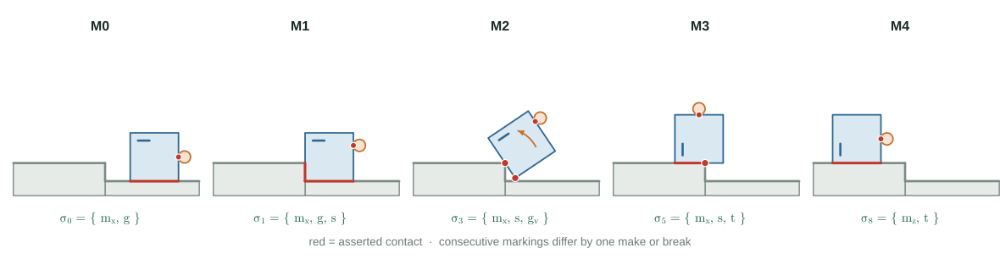
Get the sequence wrong and no amount of trajectory optimization recovers it.
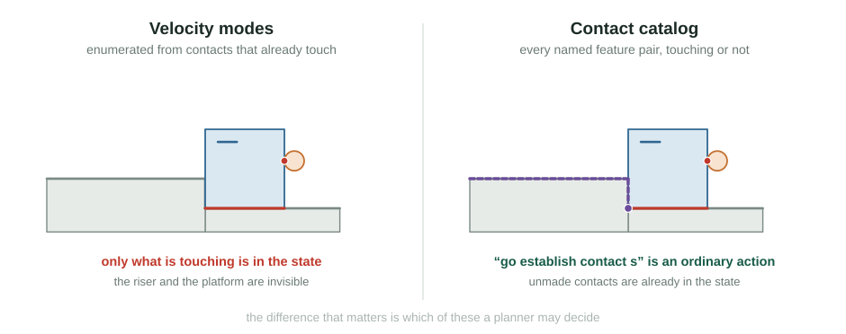
Carrying unmade environment contacts in the state, and gating their release by statics, is the structural difference — everything else follows from it.
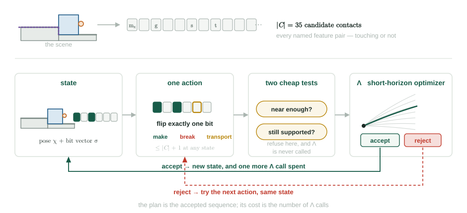
Everything that follows expands one box of this picture.
Five objects. Nothing else is needed to state the method.
Object 1
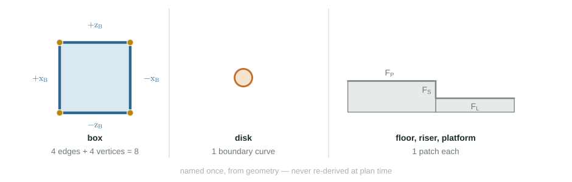
Fixed by geometry, once, before planning. Finite by construction.
Object 2
\(\varphi_c(\chi)\) is a function of configuration alone, so it is defined whether or not the pair touches. That is what lets an unmade contact sit in the state.
Object 3
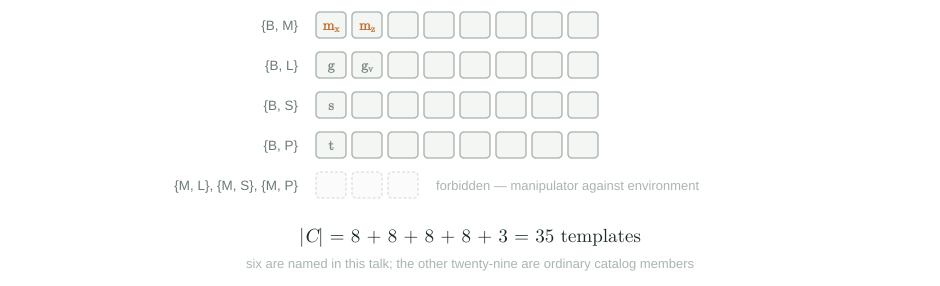
Most of these will never be touched. That is fine — the state is a bit vector over all of them, not a list of the ones in use.
Object 4
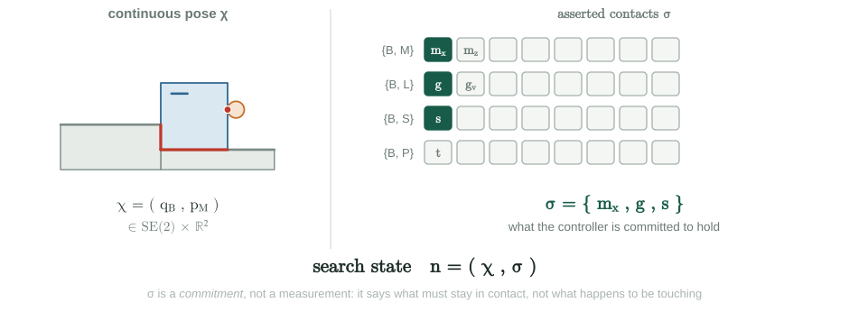
Not an enumerated set of formations — there are \(2^{35}\) of those — but the bit vector itself, carried alongside the pose.
Object 5
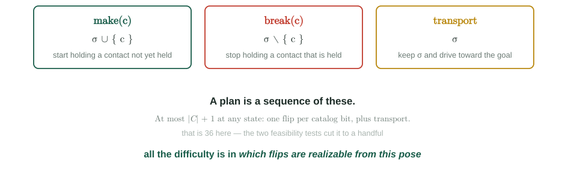
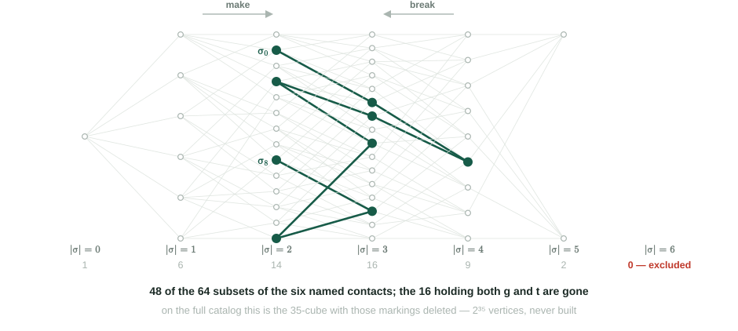
Validity is hereditary, so the graph is connected and the distance between two markings is exactly their Hamming distance. There is nothing here to search.
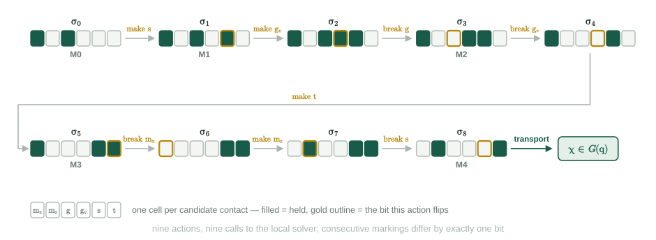
Nine actions, nine calls to the local solver. That count is the quantity this project is trying to reduce.
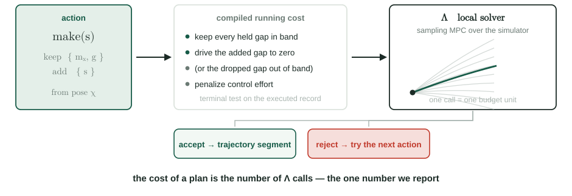
\(\Lambda\) is an oracle we call and count. Everything else exists to call it fewer times.
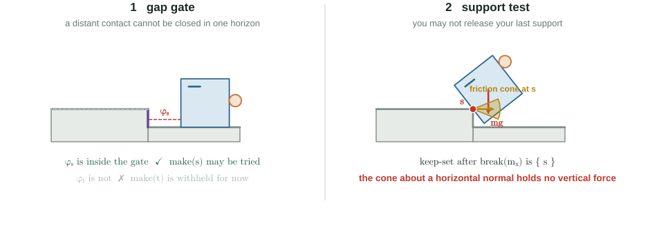
Both are products of local factors, so both cost microseconds and run before any optimization.
Both decide whether an action is legal from this pose, not from its name.
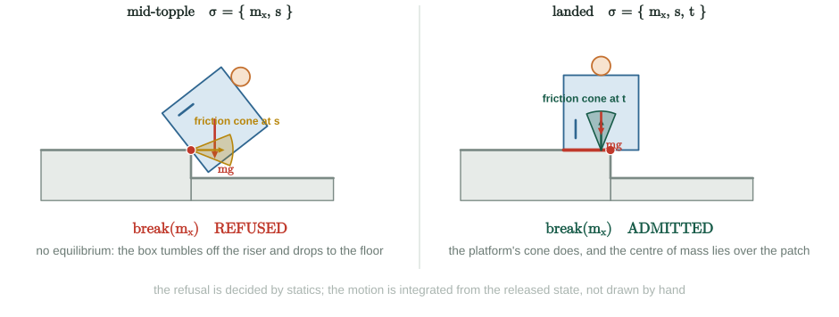
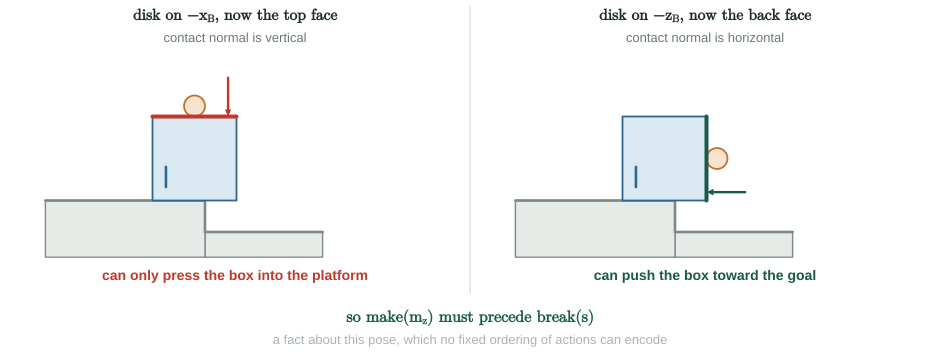
Only the new back face has a horizontal normal, so make must precede break — a fact about this pose, which no fixed ordering of actions could encode.
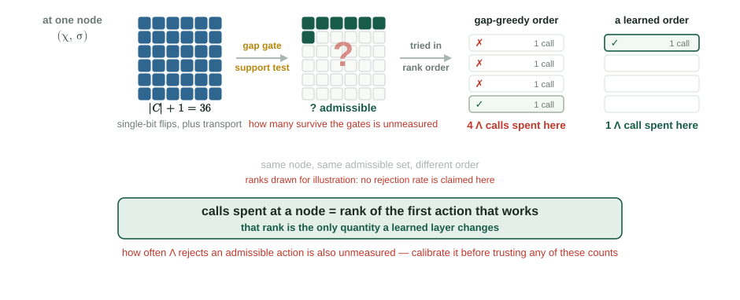
Everything so far runs with nothing learned in it, and what it returns is certified by the records that produced it.
It reorders the candidate list. It changes nothing else, and it has to earn its place.
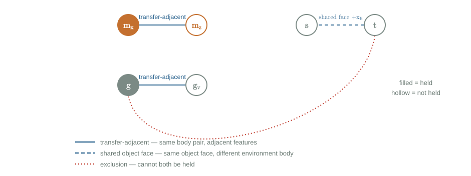
A marking is a subset of these vertices — the two filled are \(\sigma_0\). So a vertex of the marking graph is one on/off setting of this picture, and the walk is it lighting up and going dark. We search over markings; the network runs here, and returns which marking-graph edge to take next.
The platform contact enters the network’s view through a shared-face edge while the box is still on the floor — long before it is close enough to attempt.
It cannot make \(\Lambda\) succeed more often, and it cannot make an illegal action legal. It can only move the action that works to the front of the list.
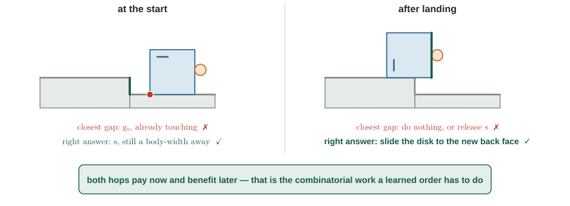
Both hops pay now for a benefit several actions later. A learning claim needs a baseline it can lose to, and this is it.
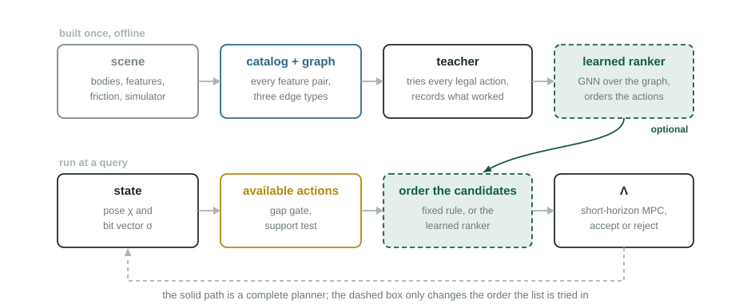
Before anything is trained, run the teacher and the closest-gap baseline on a family of step scenes, with no network at all.
If the gap is large
There is a learning problem. Train the ranker and try to close it.
If the gap is small
Closest-gap-first plus the support test already solves the family, and no architecture will produce a result worth reporting.
Calibrate \(\Lambda\) first: measure how often a much larger retry budget reverses a rejection. Until that false-negative rate is known, every teacher label and every baseline number is unquantified.
Then two comparisons against something other than a variant of this planner: a method that does no discrete search at all, and a different discrete object — the contact-intention interface, which solves a task of this shape with a surface location plus an object subgoal.
1 · Unmade contacts are decisions — planner
A bit vector over all candidate contacts, so acquiring one is an ordinary action rather than a consequence of motion.
2 · Release is gated by statics — planner
Refused when the surviving contacts cannot hold the object — before any optimization, not by simulating a fall.
3 · Shared-face edges — learning layer
Two supports of the same object face, against different environment bodies, exchange information. This is what puts a contact in view before it is reachable.
4 · Cost measured in oracle calls — methodology
Against a greedy constructor on the same state space, and against a planner that does no discrete search at all.
Not claimed as new: multi-relational graphs, attention on them, feature-pair catalogs, make/break generators, sampling MPC, or the teacher–student split.
Does the learning problem exist?
Unmeasured. The gating experiment answers it.
How reliable is the oracle?
A local, budget-limited solver rejects realizable actions at an unknown rate, and everything downstream inherits that noise.
Does the catalog survive 3D?
Only with aggressive pruning, which is then load-bearing rather than an optimization.
Ranker, or lookahead?
Generating a whole future sequence of markings is the richer option — and the one that has to prove it beats the cheap head.
The construction is worth building. That learning helps is, so far, a hypothesis with a designed experiment attached and no data.
When the contacts are the plan, the planner has to invent them — including the ones that do not exist yet.
Two separable claims The planner: unmade contacts are decisions, and statics gates release. The accelerator: a learned order costs fewer solver calls. The first does not depend on the second.
Next Teacher against the geometric baseline, with \(\Lambda\)’s false-negative rate calibrated first — before anything is trained.
Aykut C. Satici · Robot Control Lab · UT Dallas · aykut.satici@utdallas.edu
Figures are generated from the scene geometry by assets/make_figures.py, in the report’s convention: \(+x_W\) left, \(+z_W\) up, positive \(\theta\) the counterclockwise topple.
← Research Home · Nonprehensile Manipulation